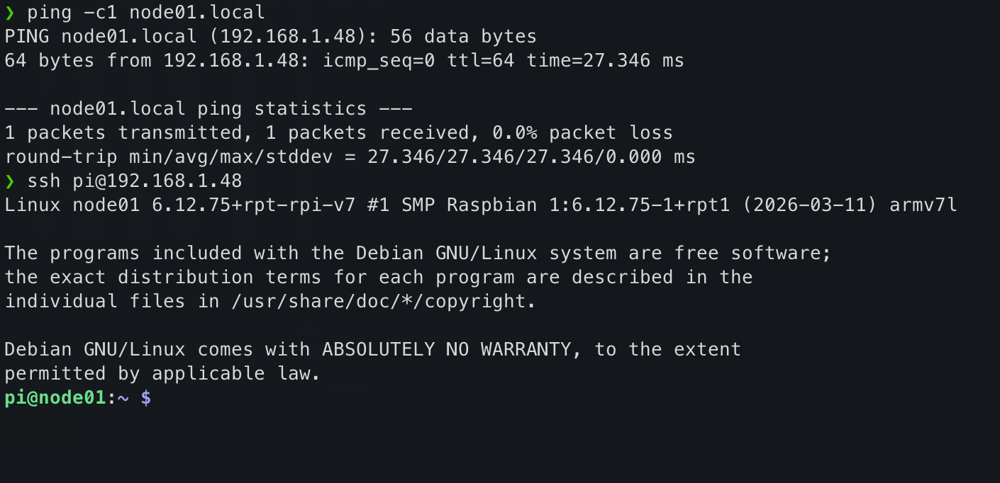

Booting and Updating
Last updated on 2026-06-19 | Edit this page
Overview
Questions
- How do you connect to a freshly booted Raspberry Pi on the network?
- What are the first steps after logging in for the first time?
Objectives
- Find a Raspberry Pi on the network using
ping - Log in to the Pi via SSH
- Update and upgrade the OS packages
Running the OS for the first time
Once you have written the operating system to the microSD card you can insert the card into the RPi and switch it on. If you configured the OS with a Wifi SSID and enabled ssh you should be able to access the RPi via the wireless network using your desktop or laptop computer.
::: callout First boot takes longer than usual
On its very first boot, the Pi automatically expands the root
filesystem to fill the SD card. This can take a minute or two, during
which the network interface will not yet be up. Wait until
ping node01.local succeeds before attempting to SSH in.
:::
How do I find my IP address?
In the setup stage, you connected your Pi to the
CarpentriesOffline WiFi network and gave each node a name,
for example node01. You can use the ping
command to check it is connected to the network:
BASH
❯ ping -c1 node01.local
PING node01.local (192.168.1.48): 56 data bytes
64 bytes from 192.168.1.48: icmp_seq=0 ttl=64 time=27.346 ms
--- node01.local ping statistics ---
3 packets transmitted, 3 packets received, 0.0% packet loss
round-trip min/avg/max/stddev = 8.019/9.380/11.158/1.315 msThis performs a DNS lookup with the router and resolves the DNS
address, node01.local to its dynamically-assigned IP
address (here 192.168.1.48), then sends an ICMP “ping”
packet to ensure we can reach it on the network.
::: discussion Trouble connecting to your Pi?
.local hostnames resolve automatically on macOS and
Linux. On Windows they can be unreliable. If
ping node01.local is failing, even after waiting a little
while for the system to expand the root partition, try the following in
order:
Check you are using your Pi’s actual hostname: the examples in this lesson use
node01, but you (or we) may have given yours a different name in the Raspberry Pi Imager. Check the label on your Pi, or ask your neighbour what name they set, and make sure yourpingandsshcommands use that name rather than the example from the instructions.-
Try SSH by name anyway: even if
pingfails, SSH sometimes resolves.localnames independently. Some routers also support bare hostnames without the.localsuffix, so it is worth trying both: Reboot the Pi: if it failed to join the WiFi on first boot, a reboot usually fixes it. Wait a minute, reboot, then try again.
-
Use a network scanner: these free GUI tools list every device on your network along with its IP address. Look for a device named
node01:Windows / macOS / Linux: Angry IP Scanner
Windows only: Advanced IP Scanner
-
Command line (all platforms):
nmap -sn 192.168.1.0/24(requires package install)Installing nmap
Platform Command Windows (PowerShell) winget install nmapmacOS brew install nmapDebian / Ubuntu sudo apt-get install nmapFedora / RHEL sudo yum install nmap
Once you have the IP address, use it in place of the hostname:
Ask your instructor: they can find the IP address from the router.
:::
Logging in to the Pi
Use SSH or login with a local console (if you have a monitor attached). Use the login details you used above to log into the Pi.
In section 2, we set our username in the Raspberry Pi Imager to
pixie, and the password set there was
0nl1n3.
Logging in should look something like this in your terminal:

Updating the software
Now you are connected, do an update and a full-upgrade:
- Use
ping node01.localto confirm a Pi is reachable on the network before connecting - SSH with
ssh <username>@<ip-address>to log in - Always update packages with
sudo apt update && sudo apt full-upgrade -ybefore installing software